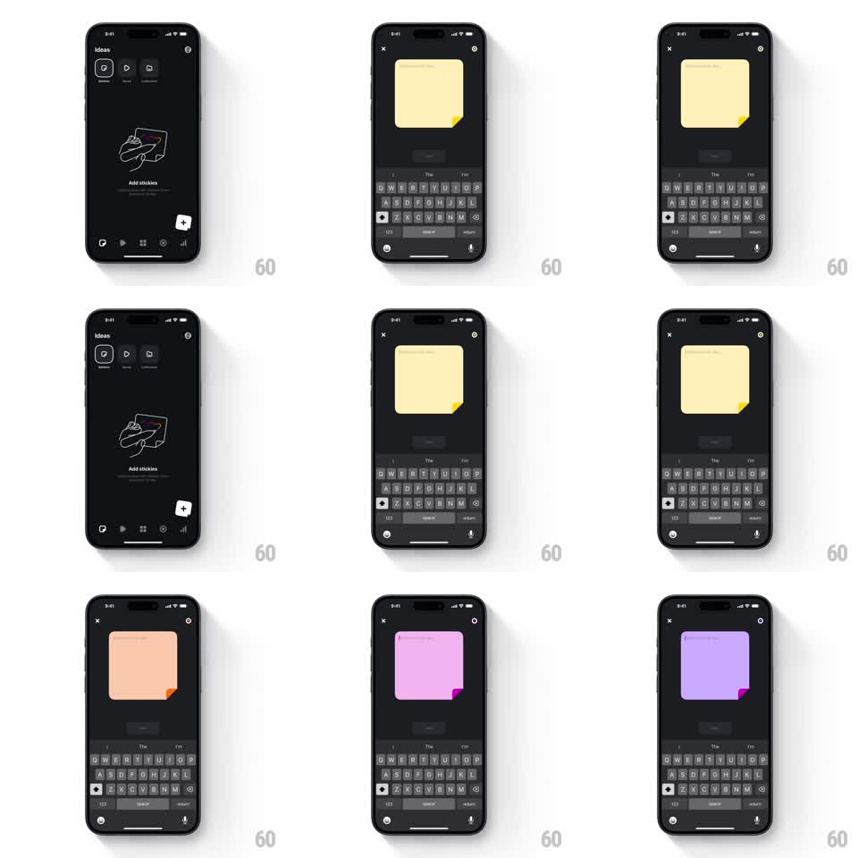

Media
Frame-by-frame

Rebuild this interaction 1:1: Edits stickies FAB morph - on the dark Ideas screen ("Add stickies" empty state), tapping the floating + button morphs it into a large sticky note card that springs open with the keyboard, and swiping the color swatch cycles the note's paper color (yellow, orange, pink, purple) with the folded corner matching.

Rebuild this interaction 1:1: Edits stickies FAB morph - on the dark Ideas screen ("Add stickies" empty state), tapping the floating + button morphs it into a large sticky note card that springs open with the keyboard, and swiping the color swatch cycles the note's paper color (yellow, orange, pink, purple) with the folded corner matching.
## Integration
Integration: stack-agnostic spec - springs given as stiffness/damping, timed motions as duration + curve; map every value to your framework and animation library of choice.
## Scene
Dark Ideas screen: "Ideas" header, tab pills, a hand-drawn sticky-note illustration with "Add stickies" text, bottom bar, and a white + FAB. Morphed state: a big square sticky note with a folded bottom-right corner fills the upper screen, X close button, color dot top-right, and the keyboard raised below with a formatting bar ("The / I'm" suggestions).
## Motion spec
Pattern: FAB-to-card morph with color cycling.
- Tap the FAB: it expands into the sticky note (bounds morph from 56pt circle to the card rect, spring ~300/18, corner radius animating 28 -> 12pt), the + icon rotating 45deg into the X (200ms).
- The keyboard rises in sync (slides up with the morph, 250ms) and the suggestion bar fades in.
- Color change: tap the color dot or swipe the note; the paper color crossfades through the palette (yellow -> orange -> pink -> purple, 250ms) with the folded corner tinting a shade darker instantly.
- Close: the card morphs back into the FAB (reverse spring), keyboard dropping first (200ms).
## Calibration
- The morph is continuous - the FAB's circle visibly becomes the card's rounded rect; no crossfade trick.
- The folded corner stays crisp and darker than the paper at every color.
## Reduced motion
FAB crossfades to the card (200ms) without the bounds morph.
## Don't miss
- The note's paper texture and fold shadow persist through color changes.
- The keyboard suggestion bar ("The", "I'm") appears with the keyboard, not after.